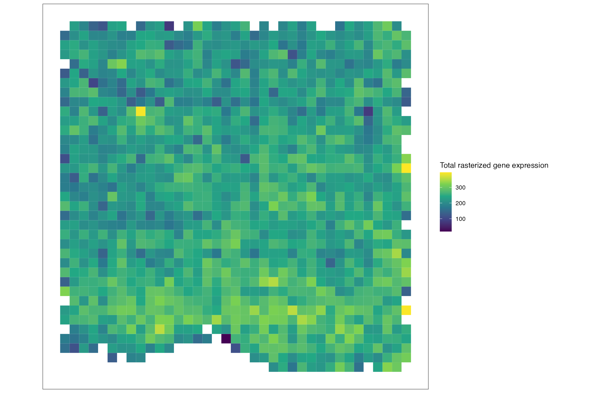
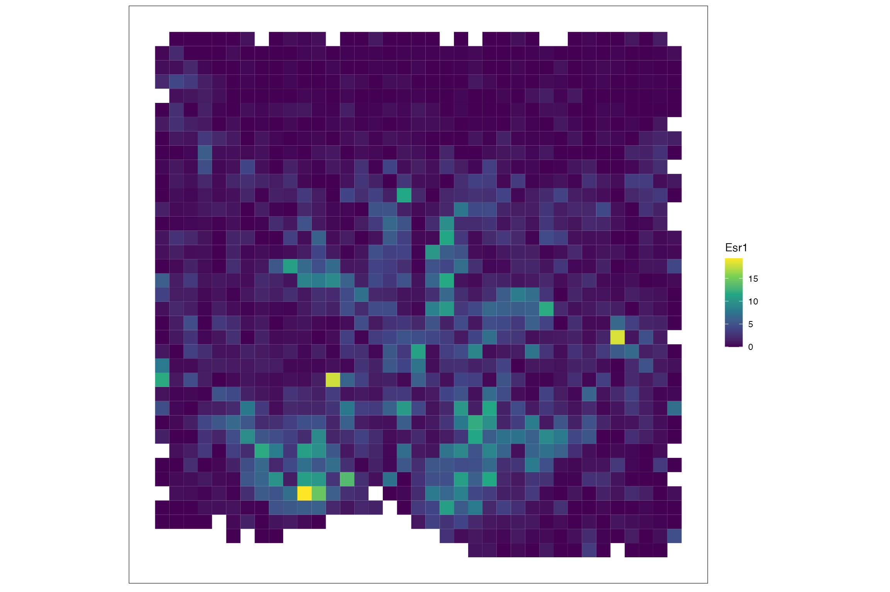
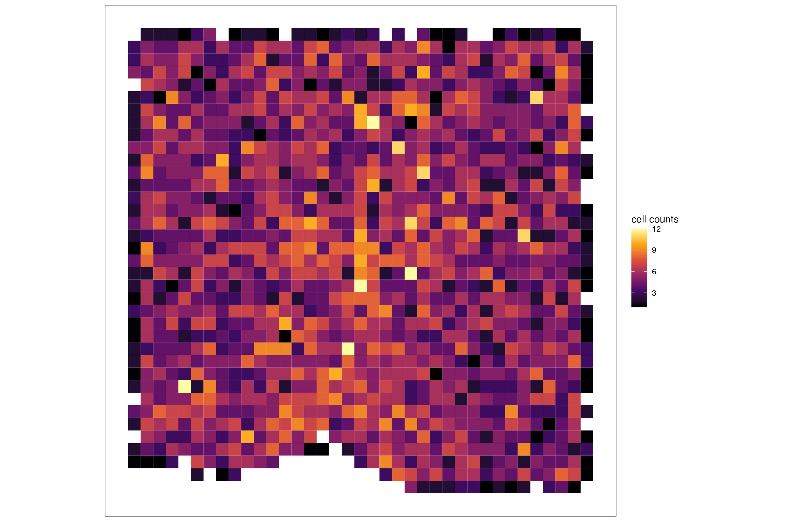
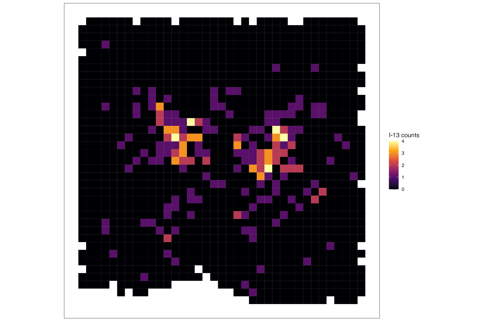
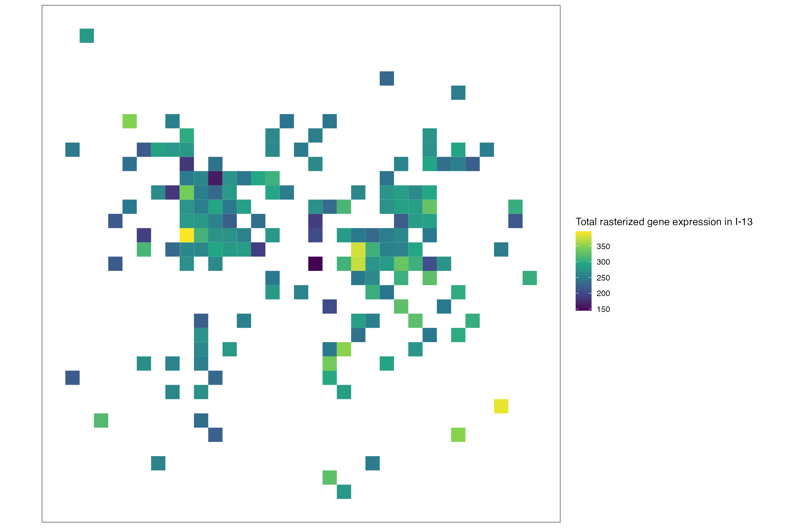
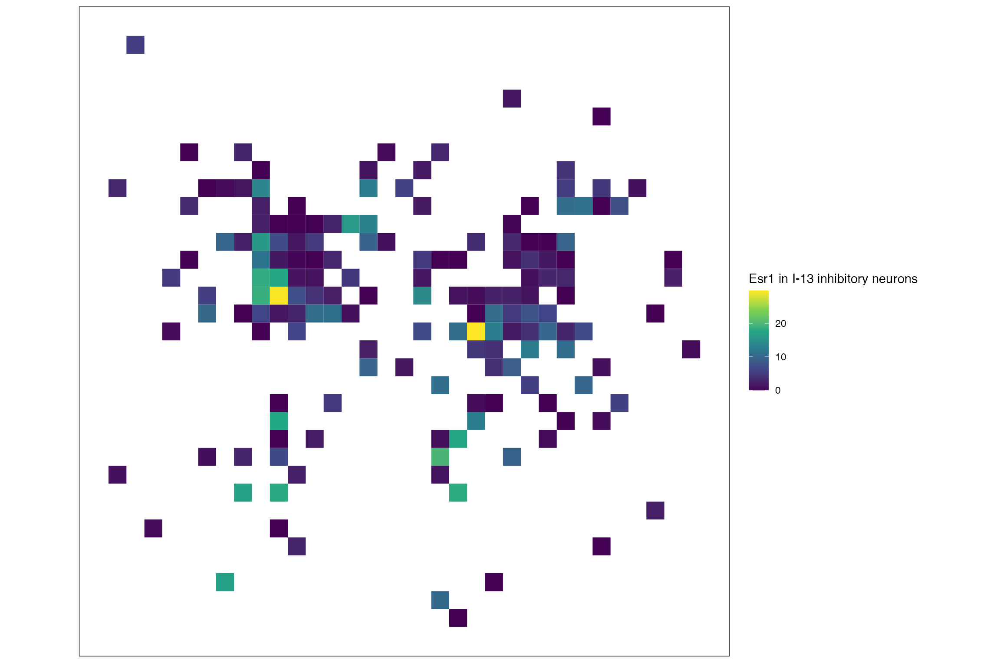

Getting Started With SEraster
Source:vignettes/getting-started-with-SEraster.Rmd
getting-started-with-SEraster.Rmd
library(SpatialExperiment)
#> Loading required package: SingleCellExperiment
#> Loading required package: SummarizedExperiment
#> Loading required package: MatrixGenerics
#> Loading required package: matrixStats
#>
#> Attaching package: 'MatrixGenerics'
#> The following objects are masked from 'package:matrixStats':
#>
#> colAlls, colAnyNAs, colAnys, colAvgsPerRowSet, colCollapse,
#> colCounts, colCummaxs, colCummins, colCumprods, colCumsums,
#> colDiffs, colIQRDiffs, colIQRs, colLogSumExps, colMadDiffs,
#> colMads, colMaxs, colMeans2, colMedians, colMins, colOrderStats,
#> colProds, colQuantiles, colRanges, colRanks, colSdDiffs, colSds,
#> colSums2, colTabulates, colVarDiffs, colVars, colWeightedMads,
#> colWeightedMeans, colWeightedMedians, colWeightedSds,
#> colWeightedVars, rowAlls, rowAnyNAs, rowAnys, rowAvgsPerColSet,
#> rowCollapse, rowCounts, rowCummaxs, rowCummins, rowCumprods,
#> rowCumsums, rowDiffs, rowIQRDiffs, rowIQRs, rowLogSumExps,
#> rowMadDiffs, rowMads, rowMaxs, rowMeans2, rowMedians, rowMins,
#> rowOrderStats, rowProds, rowQuantiles, rowRanges, rowRanks,
#> rowSdDiffs, rowSds, rowSums2, rowTabulates, rowVarDiffs, rowVars,
#> rowWeightedMads, rowWeightedMeans, rowWeightedMedians,
#> rowWeightedSds, rowWeightedVars
#> Loading required package: GenomicRanges
#> Loading required package: stats4
#> Loading required package: BiocGenerics
#>
#> Attaching package: 'BiocGenerics'
#> The following objects are masked from 'package:stats':
#>
#> IQR, mad, sd, var, xtabs
#> The following objects are masked from 'package:base':
#>
#> anyDuplicated, aperm, append, as.data.frame, basename, cbind,
#> colnames, dirname, do.call, duplicated, eval, evalq, Filter, Find,
#> get, grep, grepl, intersect, is.unsorted, lapply, Map, mapply,
#> match, mget, order, paste, pmax, pmax.int, pmin, pmin.int,
#> Position, rank, rbind, Reduce, rownames, sapply, setdiff, sort,
#> table, tapply, union, unique, unsplit, which.max, which.min
#> Loading required package: S4Vectors
#>
#> Attaching package: 'S4Vectors'
#> The following object is masked from 'package:utils':
#>
#> findMatches
#> The following objects are masked from 'package:base':
#>
#> expand.grid, I, unname
#> Loading required package: IRanges
#> Loading required package: GenomeInfoDb
#> Loading required package: Biobase
#> Welcome to Bioconductor
#>
#> Vignettes contain introductory material; view with
#> 'browseVignettes()'. To cite Bioconductor, see
#> 'citation("Biobase")', and for packages 'citation("pkgname")'.
#>
#> Attaching package: 'Biobase'
#> The following object is masked from 'package:MatrixGenerics':
#>
#> rowMedians
#> The following objects are masked from 'package:matrixStats':
#>
#> anyMissing, rowMedians
library(SEraster)Load data
data("merfish_mousePOA")
merfish_mousePOA
#> class: SpatialExperiment
#> dim: 155 6509
#> metadata(0):
#> assays(1): volnorm
#> rownames(155): Ace2 Adora2a ... Ucn3 Vgf
#> rowData names(0):
#> colnames(6509): 6d6b1d59-6f3b-4a9d-b5a4-8c8b073ae025
#> 76200644-c14a-4cfa-8752-2a02e5f10d20 ...
#> 6b666f81-7b73-4100-9e02-b5381b39f0f3
#> fdcddd97-7701-462a-b48f-979111245bd5
#> colData names(4): bregma celltype neurontype sample_id
#> reducedDimNames(0):
#> mainExpName: NULL
#> altExpNames(0):
#> spatialCoords names(2) : x y
#> imgData names(0):Rasterize gene expression
## rasterize gene expression
rastGexp <- SEraster::rasterizeGeneExpression(merfish_mousePOA, assay_name="volnorm", resolution = 50)
## plot
SEraster::plotRaster(rastGexp, name = "Total rasterized gene expression")
SEraster::plotRaster(rastGexp, feature_name = "Esr1", name = "Esr1")
Rasterize cell-type
## rasterize cell type
rastCt <- SEraster::rasterizeCellType(merfish_mousePOA, col_name = "neurontype", resolution = 50)
## plot
SEraster::plotRaster(rastCt, name = "cell counts", option = "inferno")
SEraster::plotRaster(rastCt, feature_name = "I-13", name = "I-13 counts", option = "inferno")
Rasterize gene expression within cell-type
## rasterize cell-type specific gene expression by subsetting to cell-type of interest
cellsidx <- colData(merfish_mousePOA)$neurontype == 'I-13'
subset <- merfish_mousePOA[, cellsidx]
## rasterize gene expression
rastGexpSubset <- SEraster::rasterizeGeneExpression(subset, assay_name="volnorm", resolution = 50)
## plot
SEraster::plotRaster(rastGexpSubset, name = "Total rasterized gene expression in I-13")
SEraster::plotRaster(rastGexpSubset, feature_name = "Esr1", name = "Esr1 in I-13 inhibitory neurons")